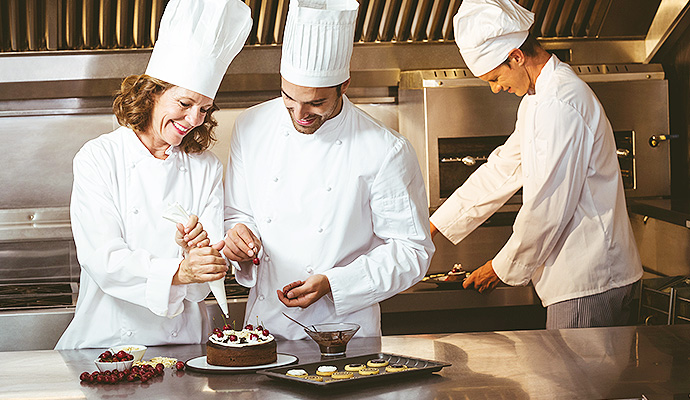

公司简介
Company Profil

2014年12月21Cake蛋糕公司在西安成立了，主要生产销售蛋糕、面包、饮品。
2014年12月，21Cake蛋糕公司引进上海先进的饼店经营模式，
开始以建立连锁专卖店，打造自由销售渠道，产品经营范围由单一的蛋糕产品扩展到生日蛋糕、面包、饮品，
从而形成了以生日蛋糕为龙头产品的新的产品线。
“21Cake蛋糕”品牌的推出及饼店的经营模式在西北焙烤行业创造了多项第一：
第一家给生日蛋糕冠以品牌；第一家进行连锁专卖；第一家进行开架自选销售；
第一家进行CI整体形象设计；第一家在电视、报纸等媒体上做广告宣传。
正是有了以上的第一，21Cake蛋糕才得以快速发展。
目前拥有5000余名员工，近300家专营店。
旗下拥有21Cake蛋糕、享+、太氏、国子轩等多个子品牌，
从创立至今，21Cake始终坚持产品品质至上的经营理念，
不断致力于产品创新和对市场的把握，持续保持行业先锋地位。
